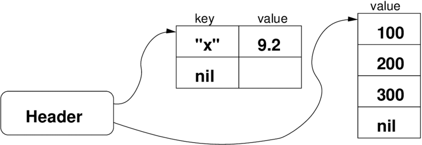

What is this talk about?
- Interfacing scripting languages with C
- Lua & Ruby
- Focus on Lua side
- Lua for programmers
- Assuming C programming experience
- Only an introduction to interfacing techniques
- Examples tested on Lua 5.2.4 Ubuntu 16.04
- Slides at Plaira Blogs: blog.plaira.io
Why?
- Combine best of both worlds
- Scripting: Ease of development
- C : Powerful, OS, HW
- So many languages
- Many Potential Uses
My interest
- C and Golang experience
- Raw socket in Lua
- system/exec == Hammer
- New avenues
Why Lua?
Small
Embeddable
C based syntax
Written in C
C API
Introduction to Lua
C based syntax
LuaJit claims to be fastest scripting language
Dynamically typed
Garbage collected
Basic types: nil, boolean, number, string,
userdata, function, thread, and table
Specialties of Lua
Comment starts with --
First class Functions
Array is not a basic type
Support for package
Table : One & Only Data structure
userdata : basic type for C data
Strings in Lua are not NULL-terminated
Superpowers of Lua
- Multi-paradigm
- Extension Language
- Extensible Language
- Embeddable, efficient, modern scripting language
Hello world
print 'hello, world!'
--log ('hello, world!')
for i=1,100 do
if i % 3 == 0 and i % 5 == 0 then
io.write("FizzBuzz\n");
elseif i % 3 == 0 then
io.write("Fizz\n");
elseif i % 5 == 0 then
io.write("Buzz\n");
else
print(i);
end
end
Lua Control Structures
- Small, conventional set : if, while, repeat, for
- Ends with explicit end or until
- break & return should be at end of block
- No next or continue
- No switch/case
- No ternary operator
Lua Examples
for var=exp1,exp2,exp3 do something end
for i=10,1,-1 do print(i) end-- print all values of array `a'
for i,v in ipairs(a) do print(v) end-- print all keys of table `t'
for k in pairs(t) do print(k) endlocal i = 1
while a[i] do
if a[i] == v then break end
i = i + 1
end
Lua Functions
- Can be defined in Lua or C
function f(a, b) return a or b end- Multiple return values
- Variable Number of arguments
- First class
- Lexical scoping, Closures
Lua Function Examples
function f(a, b) return a or b end| CALL | PARAMETERS |
|---|
| f(3) | a=3, b=nil |
| f(3, 4) | a=3, b=4 |
| f(3, 4, 5) | a=3, b=4 (5 is discarded) |
s, e = string.find("hello Lua users", "Lua")rename({old="temp.lua", new="temp1.lua"})function fwrite (fmt, ...)
return io.write(string.format(fmt,
unpack(arg)))
end
More on Lua Functions
- Function is anonymous
a = {p = print}
a.p("Hello World") --> Hello World print = math.sin -- `print' is sine a.p(print(1)) --> 0.84147 sin = a.p -- `sin' is now print sin(10, 20) --> 10 20
Lua Function Example
local statefns = {
start = do_start_state,
step1 = do_step1_state,
step2 = do_step2_state,
finish = do_finish_state
}
-- init dets
while true
do
if (dets.state == "end) then break
else
statefns[dets.state](dets)
end
done
Closures
function newCounter ()
local i = 0
return function () -- anonymous function
i = i + 1 -- upvalue
return i
end
end
c1 = newCounter()
print(c1()) --> 1
print(c1()) --> 2
Lua Tables
- Only Data Structure
- Are associative arrays
- Arrays are special cases
- Used for packages
- Used for object-oriented programming
-
$a[1000000000]=1;in perl vs Lua a={[1000000000]=1}
Lua Packages
- Implemented using tables
- LUA_PATH="?;?.lua;c:\windows\?;/usr/local/lua/?/?.lua"
- require()
- package.path = package.path .. ';my_path/?/init.lua'
package.cpath = package.cpath .. ';my_path/?.so'
- Return table from file for privacy
- Example here : https://www.lua.org/pil/15.2.html
Lua Internals
- Hand-written scanner, recursive descent parser
- Register based Virtual Machine
- Emits instructions "on the fly"
- Internalizes strings using hash table
Lua Table Internals
- Array is a special case of tables
- Array starts at 1
Lua Table implementation

Lua & C - Introduction
Lua as library, with control by C
Lua calls to C library
Both use Lua C API
C API allows C code to interact with Lua
Challenge 1: dynamic vs static type system
Challenge 2: automatic vs manual memory management
Stack between Lua & C
Stack to exchange values between Lua and C
Functions to push values on to stack
Always check if there is space on stack:
- int lua_checkstack (lua_State *L, int sz);
Lua C API
One push function for each Lua type :
- void lua_pushnil (lua_State *L);
- void lua_pushboolean (lua_State *L, int bool);
- void lua_pushnumber (lua_State *L, double n);
- void lua_pushlstring (lua_State *L, const char *s,
size_t length);
- void lua_pushstring (lua_State *L, const char *s);
Lua C API
Lua library defines no global variables at all
Lua library keeps all its state in lua_State
Pointer to this structure is passed to all functions inside Lua
Lua is reentrant and ready to be used in multithreaded code
Provides C Functions :
- to read and write Lua global variables
- to call Lua functions
- to run pieces of Lua code
- to register C functions to be called by Lua
Embedding Lua in C
- Lua as a configuration language
-- configuration file for program `pp'
-- define window size
width = 200
height = 300- Use the Lua C API to parse this file
lua_getglobal(L, "width");
lua_getglobal(L, "height");
if (!lua_isnumber(L, -2))
error(L, "`width' should be a number\n");
if (!lua_isnumber(L, -1))
error(L, "`height' should be a number\n");
*width = (int)lua_tonumber(L, -2);
*height = (int)lua_tonumber(L, -1);
Calling C from Lua
- Lua can NOT call any C function
- Application can register new C functions into Lua
- C function must follow a protocol
- Each function has its own private local stack
- First argument will always be at index 1 of this local stack
- Other side of stack : Query
- To refer to elements in the stack, the API uses indices
- To get a value from the stack, there are the lua_to* functions:
- int lua_toboolean (lua_State *L, int index);
- double lua_tonumber (lua_State *L, int index);
- const char *lua_tostring (lua_State *L, int index);
- size_t lua_strlen (lua_State *L, int index);
Related technologies
SWIG
Foreign Function Interface
Not mentioned: system/exec
SWIG
swig -python -module arith arith.c
SWIG creates two new files, arith_wrap.c and arith_wrap.doc.
gcc -I/usr/include/python1.5 -c arith.c arith_wrap.c
The object files arith.o and arith_wrap.o should now be combined to produced a shared object called arith.so:
ld -shared -o arith.so arith.o arith_wrap.o
If everything goes well, we will have a file called arith.so in our current directory.
Here is a sample interaction using the arith module:
import arith
>>>arith.add(10, 20)
30
>>>arith.add(10, -10)
0
Quick Introduction to Ruby
Lots of resources online
Popularized by Ruby-on-Rails framework
(Purely) Object-oriented scripting language
Variables are dynamically typed
First class closures (blocks)
Meta-programming
Ruby : Details
Everything is an object including nil, Class
Variables are references to objects
Method naming conventions
3 levels of access control for methods :
publicprotectedprivate
You can write Ruby programs direcly in C
Type of all Ruby variables in C is VALUE
We can use the C version of the code in Ruby simply by require-ing it dynamically at runtime
Ruby Control Structures
if <condition>
<body>
elsif <condition>
<body>
end
while <condition>
<body>
end
until <condition>
<body>
end
<expression> if <condition>
<expression> unless <condition>
<expression> while <condition>
<expression> until <condition>
Ruby Classes
class SavingsAccount < Account # inheritance
# Constructor. Used when SavingsAccount.new is called
def initialize(starting_balance=0) # Optional argument
@balance = starting_balance
end
def balance # instance method
@balance # instance var. visible only to this object
end
def balance=(new_amount) # like setter
@balance = new_amount
end
def deposit(amount)
@balance += amount
end
@@bank_name = "MyBank" # class variable
# Class Method
def self.bankname
@@bank_name
end
end
Ruby & C
Run arbitrary Ruby expression (C version of eval)
rb_eval_string("anObject.each{|x| x.clearFlag }");
Type of Ruby variables is VALUE, a pointer to a Ruby object
Ruby object is structure that contains instance variables
Object contains a table of the methods defined for that class
VALUE
You can't have a VALUE that points to an arbitrary structure
It is a pointer to one of the defined Ruby object structures
Except: Immediate values are not pointers
Fixnum, Symbol, true, false, and nil are stored directly in VALUE
There are several useful conversion macros
Every C function callable from Ruby must return a VALUE
C Datatype Wrapping
VALUE Data_Wrap_Struct(VALUE class, void (*mark)(), void (*free)(), void *ptr)- Wraps the given C datatype ptr, registers the two garbage collection routines (see below), and returns a VALUE pointer to a genuine Ruby object. The C type of the resulting object is
T_DATA and its Ruby class is class.
VALUE Data_Make_Struct(VALUE class, c-type, void (*mark)(), void (*free)(), c-type *)- Allocates a structure of the indicated type first, then proceeds as
Data_Wrap_Struct. c-type is the name of the C datatype that you're wrapping, not a variable of that type.
Data_Get_Struct(VALUE obj,c-type,c-type *)- Returns the original pointer. This macro is a type-safe wrapper around the macro
DATA_PTR(obj), which evaluates the pointer.
Next
Make some configuration files lua-based
wget/exec script on event
yacc connections to ruby and lua
More kernel and system call interfaces with Lua/Ruby
Resources
https://www.researchgate.net/publication/281823578_Introduction_to_Ruby
https://www.slideshare.net/henrythe10th/code-for-startup-mvp-ruby-on-rails-session-2
http://phrogz.net/programmingruby/ext_ruby.html
https://silverhammermba.github.io/emberb/c/
https://www.lua.org/doc/jucs05.pdf
https://www.lua.org/ftp/refman-5.0.pdf
https://www.luaforge.net/docman/83/98/ANoFrillsIntroToLua51VMInstructions.pdf
LaMill Software Services
/